Hospital Management System
A normalized relational database for hospital operations, from ER design to SQL analytics.
A hospital runs on many moving parts: patients, doctors, appointments, surgeries, rooms, beds, and billing. We designed a centralized relational database to integrate all of these into one consistent system, then validated it through normalization and answered real operational questions with SQL.
Approach
We modeled 14 entities from a Kaggle Hospital Management System dataset, documented metadata and cardinality for each, and built an ER diagram and relational model with primary and foreign keys. We then checked every table against third normal form (3NF), fixing the one violation we found, and wrote 10 analytical SQL queries to surface operational insights.
The goal was a database that is both clean enough to trust and useful enough to answer questions managers actually ask.
From the deck
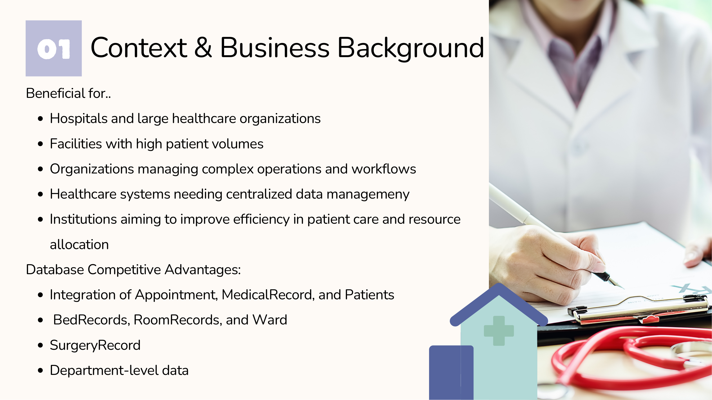
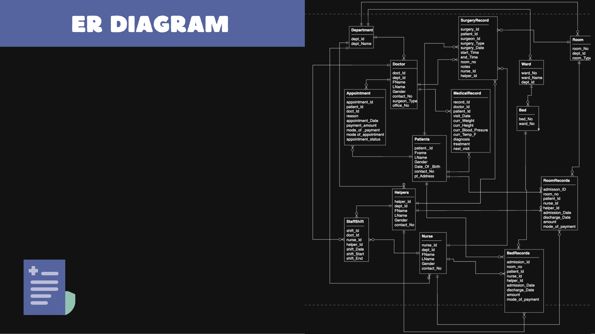
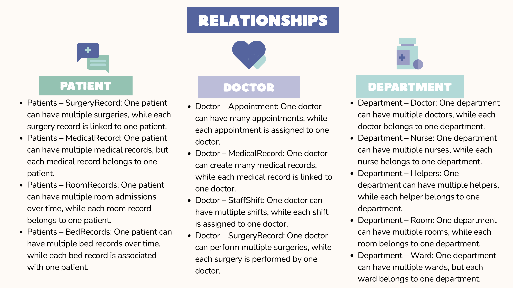
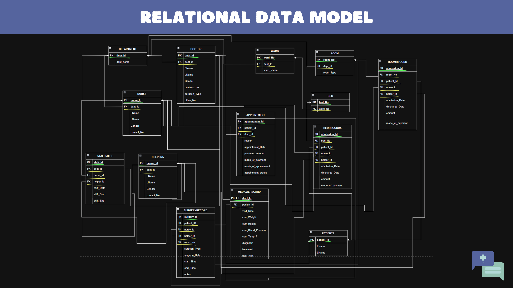
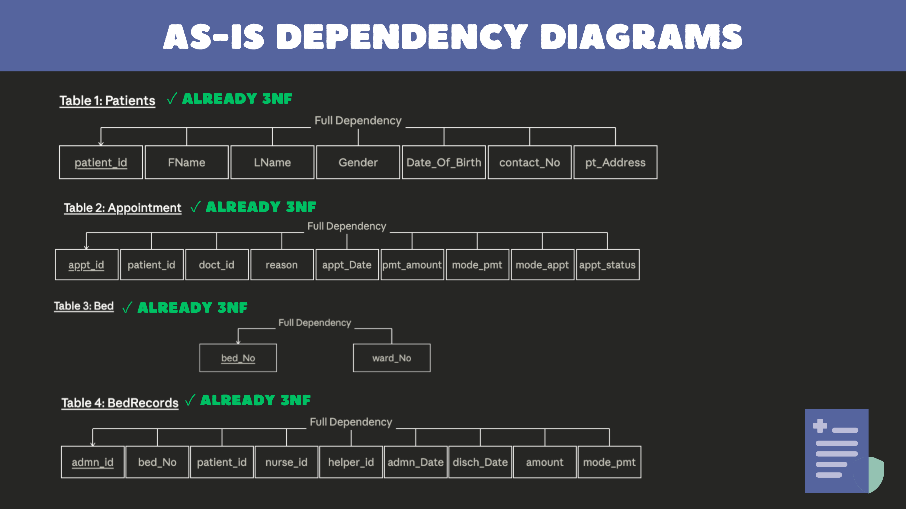
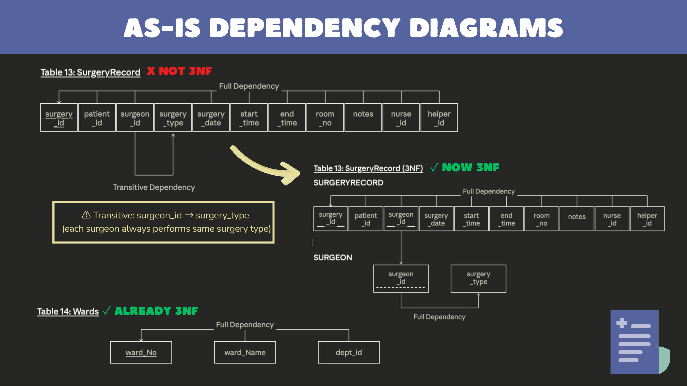
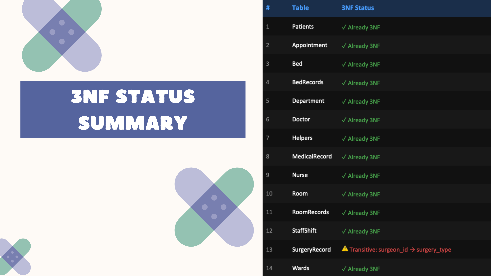
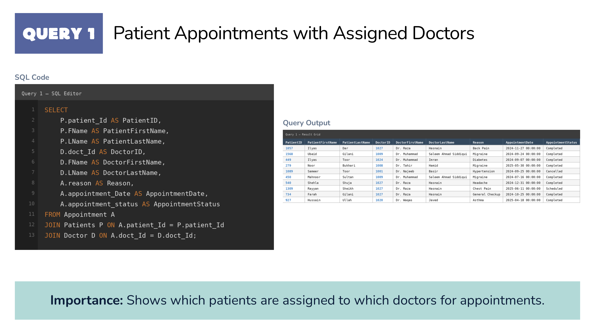
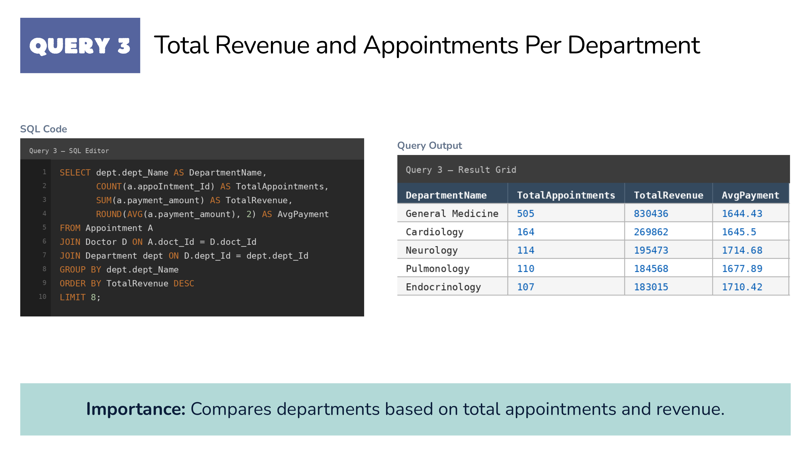
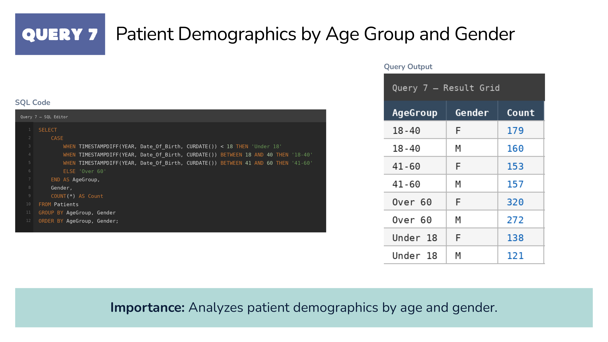
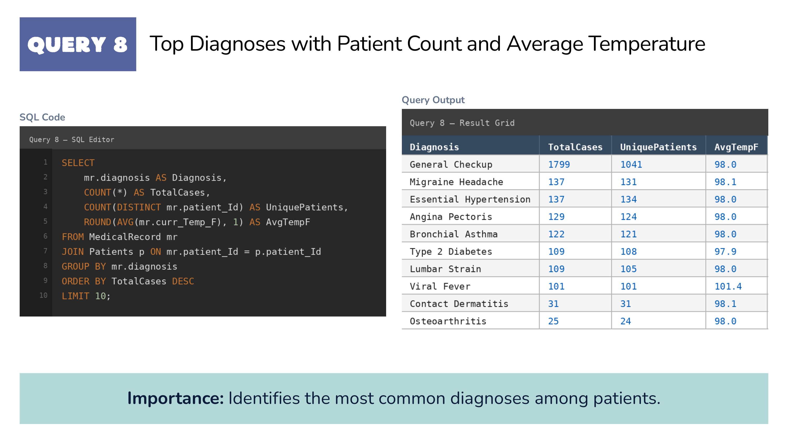
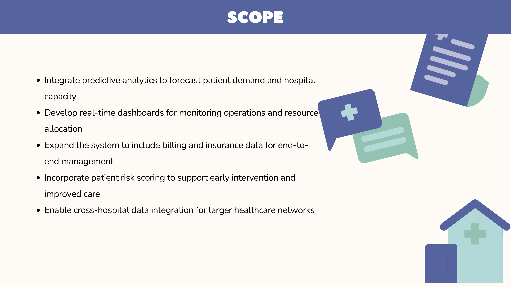
What I learned
Designing this database showed how much structure matters before any analysis begins. Normalizing to 3NF removed redundancy and update anomalies, and surfaced a subtle transitive dependency in SurgeryRecord that we would have missed otherwise. With a clean schema in place, ten SQL queries were enough to answer practical questions about appointments, revenue, bed capacity, demographics, and doctor workload.
The bigger takeaway was that good data modeling is itself an analytical skill. A well-designed schema makes future work, from dashboards to predictive models, far easier, while a messy one quietly limits everything built on top of it.